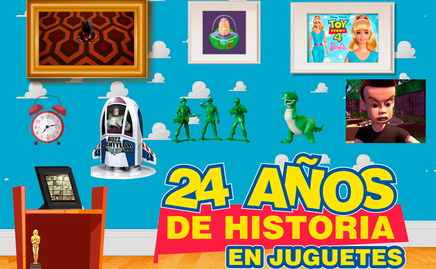

Estrenos del mes
Por: Jerrika Lozano
Para esta temporada nada mejor que ir a cine y ver los últimos estrenos de la cartelera, con el excelente servicio y la comodidad de los Multicines de Royal Films. ¡El mejor plan para toda la familia; disfrutar de las mejores películas y al mejor precio!
¡LLEVAMOS LA EXPERIENCIA DEL CINE A OTRO NIVEL!
En Royal Films contamos con las novedosas salas 4DX, una de las tecnologías más avanzadas que ofrece una experiencia cinematográfica totalmente envolvente.
La nueva sala 4DX excede la tercera dimensión, además de una proyección y sonido de alta calidad, la sala cuenta con efectos multisensoriales, sillas con movimiento, efectos ambientales como el viento, burbujas, y aroma, trabajan en perfecta sincronía con la acción en la pantalla.
Cada silla está equipada con simuladores programados para realizar movimientos básicos y poder crear un sin fin de combinaciones posibles para imitar acciones tales como volar y conducir.
Además de los movimientos, la sala está equipada con efectos ambientales para mejorar aún más la experiencia. A partir de un juego de luces para simular una tormenta, ventiladores para recrear brisas suaves, rociadores para generar sensación de humedad y esencia de olor real.
por: Laura Contreras
Muchos de los que vieron la primera parte de Toy Story en el año 1995 llegarán a las salas de cine este mes para disfrutar de la cuarta entrega, sólo que en esta ocasión algunos tendrán más de 30 añitos. Para recordar los momentos de esta historia, en Revista Boga les entregaremos los datos más curiosos de esta saga de películas que ha llenado de emociones a grandes y chicos.
1. ¿El suelo de la casa de Sid te parece familiar?
Esto es porque se tomó como modelo el patrón de la
alfombra en el Hotel Overlook donde juega el niño de la
película El Resplandor.
2. ¿Morado y Verde?
Estos colores fueron escogidos para el traje de Buzz ya que también eran los favoritos de la esposa de John
Lasseter, actual director de Pixar.
3. Qué inteligente eres, Barbie
Barbie no aparece en la primera cinta, ya que
Mattel no lo autorizó, pues se creía que Toy
Story sería un rotundo fracaso. Es decir que el
papel de “Little Bo Peep”, iba a ser para Barbie,
sin embargo luego del éxito de la historia,
la muñeca apareció en las dos siguientes
entregas.
4. Más de dos años
¿Cuánto se demoraron con
el Story Board de Toy Story 3?
En realidad fueron dos años y
medio, sin duda un arduo trabajo
que finalmente dio frutos e hizo
feliz a los fanáticos.
5. ¿Buzz Lightyear o Lunar Larry?
Buzz Lightyear, tenía un
nombre diferente al que hoy
conocemos, este personaje iba
a llamarse Lunar Larry, pero
Buzz terminó ganando la
batalla.
6. ¡A entrenar con los soldados!
Con el fin de estudiar mejor los movimientos de los
soldados, que aparecen en esta historia, a el animador Pete
Docter se le ocurrió la idea de clavar sus propias zapatillas
en una tabla de madera, luego de andar un día entero con
ellas, entendió como podrían caminar estos personajes.
7. Un personaje real
Sid Phillips, está inspirado en un ex-empleado
de Pixar que tiene el mismo apellido, este
hombre disfrutaba desarmar juguetes para
luego crear extrañas criaturas.
8. Gracias a Parque Jurásico
Rex fue incluido en la historia gracias al éxito de ‘Parque
Jurásico’, pues las tiendas estaban repletas de juguetes de
dinosaurios y decidieron construir un personaje miedoso
y tímido, justo lo contrario a lo que conocemos de estos
animales.
9. Miles de bocetos
92 mil 854 bocetos se dibujaron para Toy Story 3. Una
labor grandiosa que requirió de la participación de un
grupo de colaboradores geniales.
10. Y el Oscar, es para…
Toy Story’ fue la primera película de animación en ser nominada a uno de los premios más importantes de los Óscar, Mejor Guión Original. Aunque no se llevó la estatuilla, si fue la cinta más taquillera del año.
Estos son algunos de los muchos datos curiosos que existen de la saga de juguetes más famosa del mundo animado, este 20 de Junio se estrena en las salas de cine Royal Films Toy Story 4 y de seguro muchos estaremos más nostálgicos de lo normal, con el final de esta historia.
X-MEN: DARK PHOENIX
6 DE JUNIO
En X-Men: Dark Phoenix, los X-Men se enfrentan a su enemigo más temible y poderoso: uno de los suyos, Jean Grey. Durante una misión de rescate en el espacio, Jean casi muere cuando es golpeada por una fuerza cósmica misteriosa. A su regreso a casa, esta fuerza no solo la hace infnitamente más poderosa, sino también mucho más inestable. Jean, quien lucha en su interior contra esta entidad, desencadena sus poderes en formas que no puede comprender ni dominar. Al estar en un espiral fuera de control, y lastimar a aquellos que más ama, Jean comienza a deshacer la mismísima estructura que mantiene unidos a los X-Men. Ahora con esta familia cayéndose a pedazos deberán encontrar una manera de unirse no solo para salvar el alma de Jean, sino también para salvar a nuestro planeta de extraterrestres que desean convertir esta fuerza en un arma y gobernar la galaxia.
EL SÓTANO DE MA
6 DE JUNIO
Unos adolescentes le piden a una mujer que les compre alcohol ya que las leyes no se lo permiten, ella termina accediendo e incluso les deja el sótano de su casa para montar fiestas. Las únicas reglas son que no pueden salir del sótano y la tienen que llamar Ma. Pronto, Ma se convierte en una más del grupo pero, las apariencias engañan y lo que comienza como un mero acto de bondad, y el sueño de todo adolescente, termina convirtiéndose en su peor pesadilla: desapariciones, muertes sangrientas y memorias perdidas acompañarán a esta terrorífica cinta. La película está dirigida por Tate Taylor. Está protagonizada por Octavia Spencer en el papel de Ma, acompañada por Missi Pyle, Luke Evans, Juliette Lewis y Allison Janney entre otros
NI EN TUS SUEÑOS
13 DE JUNIO
Charlotte Field (Charlize Theron) es una de las mujeres más influyentes del planeta; inteligente, sofisticada y bella… es una mujer con talento para todo. Fred Flarsky (Seth Rogen), en cambio, es un apasionado periodista que parece decidido a arruinar su propia vida. No tienen nada en común, excepto que Charlotte fue la niñera de Fred, quien nunca la olvidó. Un inesperado reencuentro lleva a que Fred se una al equipo de trabajo de Charlotte, donde no encaja por su disparatado sentido del humor y su imprudencia. Pero su encanto y habilidad para entender a Charlotte, desencadenan un amor hilarante, disparejo y completamente inesperado.
HOMBRES DE NEGRO: INTERNACIONAL
13 DE JUNIO
Los Hombres de Negro siempre han protegido a la Tierra de la escoria del universo. En esta nueva aventura, abordan su amenaza más grande y global hasta la fecha: un espía en la organización Hombres de Negro. Esta vez los Men in Black contarán con nuevos protagonistas, entre ellos, la Agente M (Tessa Thompson) y el Agent H (Chris Hemsworth).
ANABELLE 3
17 DE JUNIO
Recordemos que al final de la segunda película, los especialistas en capturar demonios, Ed y Lorraine Warren, logran controlar al ser maligno que habitaba en Annabelle y llevaron a la muñeca poseída a su casa para “ponerla a salvo” sin embargo, no todo sale como esperaban. Determinados a evitar que Annabelle cause más caos, los demonólogos Ed y Lorrain Warren encierran a la muñeca diabólica en la sala de artefactos de su casa, poniéndola “a salvo” tras un cristal sagrado y contando con la sagrada bendición de un cura. Pero una terrible noche de horrores aguarda cuando Annabelle despierta a los espíritus malvados de la sala, los cuales acaban poniendo la mirada en un nuevo objetivo: Judy, la hija de diez años de los Warren.
TOY STORY 4
20 DE JUNIO
Woody siempre ha estado seguro de su lugar en el mundo, y que su prioridad es cuidar a su niño, ya sea Andy o Bonnie. Pero cuando Bonnie suma un nuevo juguete a su cuarto, llamado Forky, inician un viaje lleno de aventuras junto con los viejos y nuevos amigos. Está historia le enseñará a Woody cuán grande puede ser el mundo para un juguete. Dirigida por Josh Cooley (Primera cita de Riley) y producida por Jonas Rivera.